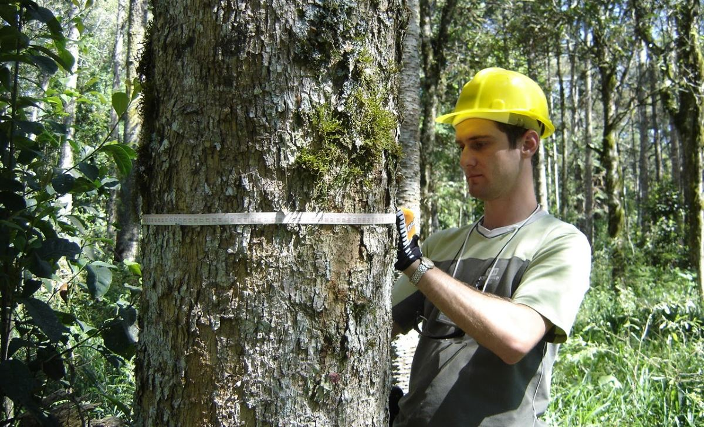
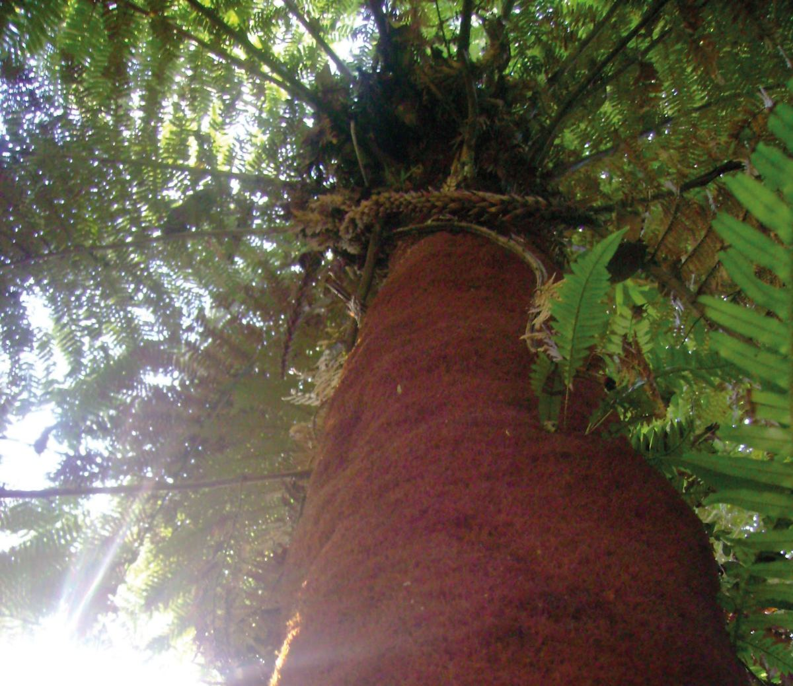
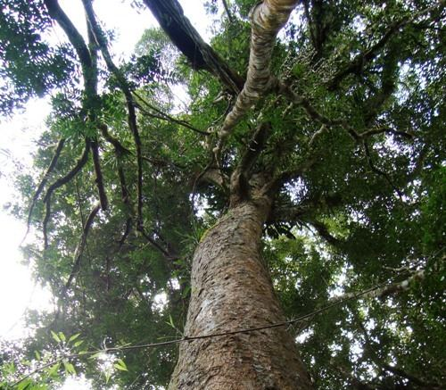
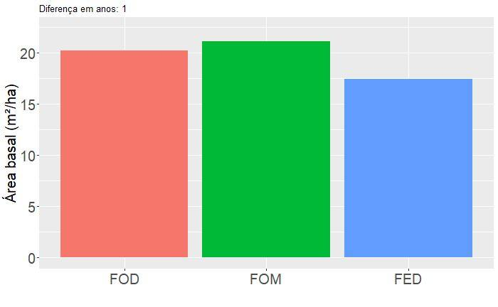
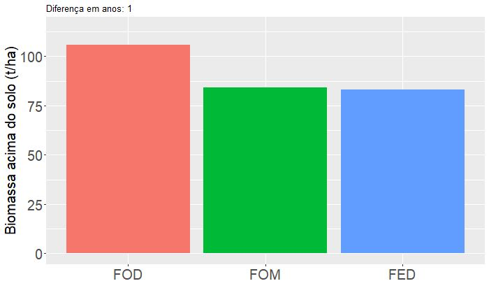
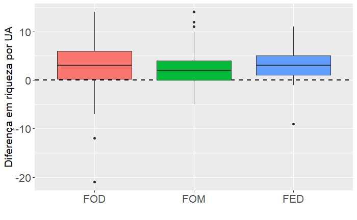

Traducido del original en portugués. Los títulos de publicaciones, las citas y los nombres se mantienen en su idioma original.
El MonitoraSC realiza el inventario continuo de los bosques catarinenses para generar información actualizada sobre el estado de conservación/degradación de los bosques del estado cada 5 años.
El Ciclo 1 comenzó en 2007 con la instalación de las unidades de muestreo y la primera medición de datos.
Consulte el apartado Ciclo 1 (2007 a 2011) para más información sobre los resultados de este ciclo.
El Ciclo 2 comenzó en 2014 con el regreso a las unidades de muestreo instaladas en el Ciclo 1 para la segunda medición de datos.
Consulte el apartado Ciclo 2 (2014 a 2019) para más información sobre los resultados de este ciclo.

Ciclo 1 (2007–2011)
Ciclo 1
(2007 a 2011)
Inventario de los remanentes forestales
Número de especies observadas
En total, incluidas las recolecciones del levantamiento florístico y de epífitas, se registraron 2175 especies de plantas vasculares de 179 familias y 797 géneros: 19 licófitas, 258 helechos, tres gimnospermas y 1895 angiospermas. Del total, 1352 especies se registraron en el levantamiento florístico adicional (recorridos alrededor de las UA).
El FlorestaSC registró 823 especies en los conglomerados, considerando los componentes arbóreo-arbustivo (DAP ≥ 10 cm), sotobosque y regeneración natural (DAP < 10 cm). Las especies pertenecen a 104 familias botánicas.

Riqueza de especies arbóreas y arbustivas encontradas en las principales tipologías de vegetación de SC.
Para más información: consulte el capítulo del libro del FlorestaSC sobre la flora catarinense. (Consulte el capítulo)
Especies de árboles y arbustos más abundantes
Después del xaxim-bugio, la canela-guaicá fue la especie arbórea más abundante en los bosques de SC.
La especie Ocotea puberula, conocida popularmente como canela-guaicá, fue la especie arbórea más abundante en Santa Catarina. Es común en todas las tipologías forestales del estado y se encuentra sobre todo en bosques secundarios, donde su crecimiento se ve favorecido.
Distribución diamétrica (cm) de la canela-guaicá (Ocotea puberula).


Frutos de la canela-guaicá.
Las diez especies más abundantes en los bosques muestreados por el FlorestaSC en Santa Catarina (n = 440; DAP ≥ 10 cm).
Especies más abundantes por tipología forestal en Santa Catarina (n = 440; DAP ≥ 10 cm).
Merecen mención los helechos arborescentes Dicksonia sellowiana (xaxim-bugio) y Alsophila setosa (samambaia-açu): ambos resultaron más abundantes que las especies arbóreas citadas, el primero con 6074 y el segundo con 3000 individuos muestreados en los conglomerados del FlorestaSC.
Especies que antes eran muy abundantes, como Ocotea catharinensis en el Bosque Ombrófilo Denso y Apuleia leiocarpa en el Bosque Estacional Deciduo, no aparecieron entre las más abundantes, probablemente por la intensa explotación maderera en Santa Catarina. Estas especies figuran como raras y amenazadas de extinción.
Lista de la flora amenazada de extinción en SC (Resolución Consema n.º 51/2014)

xaxim-bugio (Dicksonia sellowiana): helecho arborescente más abundante

canela-preta (Ocotea catharinensis): en peligro crítico de extinción

palmito juçara (Euterpe edulis): especie abundante en el Bosque Ombrófilo Denso
Para más información: consulte el capítulo del libro del IFFSC sobre la estructura de los remanentes de SC. (Consulte el capítulo)
Árboles en los estadios iniciales de la sucesión
La araucaria fue la especie más abundante en los estadios iniciales en SC.
Los árboles en estos estadios o fases de la sucesión son los que se encuentran fuera de las áreas clasificadas como bosque en los mapeos disponibles al inicio del IFFSC en 2007 (SAR, 2005/2008; PPMA, 2008).
Se identificaron 220 especies de árboles en las áreas de estadios iniciales. El pino Paraná (Araucaria angustifolia), la bracatinga (Mimosa scabrella) y la yerba mate (Ilex paraguariensis) fueron las más abundantes y juntas sumaron el 15 % del número total de individuos de estas áreas.
bracatinga (Mimosa scabrella) y pino Paraná (Araucaria angustifolia) al fondo
Para más información: consulte el capítulo del libro del FlorestaSC sobre la evaluación de áreas fuera del bosque (vegetación en estadio inicial y otros usos del suelo). (Consulte el capítulo)
Especies exóticas
Considerando todos los levantamientos del FlorestaSC (UA en bosque, UA fuera del bosque y levantamiento florístico por recorrido), se registraron 102 especies exóticas.
Se destacan los géneros Eucalyptus, Pinus y Citrus por la abundancia de individuos.
Cerca del 45 % de las especies registradas son herbáceas. De las 102 especies, solo 12 se encontraron en los conglomerados, es decir, solo esas se registraron con seguridad dentro de los remanentes forestales. Todas las demás estaban en el borde o en los senderos de acceso a los remanentes.
En general, las especies exóticas muestreadas en los conglomerados presentaron baja abundancia, con excepción de Hovenia dulcis (uva japonesa), que, sobre todo en el Bosque Estacional Deciduo, alcanzó valores considerables y se ubicó entre las 15 especies más importantes de esta fitofisonomía. En uno de los conglomerados del Bosque Estacional Deciduo se encontraron 106 individuos de uva japonesa.
Para más información: consulte el capítulo del libro del FlorestaSC sobre las especies exóticas. (Consulte el capítulo)
Hovenia dulcis (uva japonesa) y regeneración de la especie en el interior del bosque.
Foto: Paulo Schwirkowski, Flora Digital.
Riqueza de epífitas
El grupo de las epífitas vasculares representa el 23 % del total de especies registradas por el FlorestaSC.
Se registraron 491 especies de epífitas: 126 pteridófitas (helechos y licófitas) y 365 angiospermas. Las familias más ricas fueron Orchidaceae (180 especies), Bromeliaceae (69) y Polypodiaceae (43). Ocho especies figuran como amenazadas o raras. La mayor riqueza se encontró en el norte de SC (cuencas de los ríos Itajaí-açu, Cubatão e Itapocu), lo que sugiere que la región es un posible hotspot de epífitas vasculares. La elevada diversidad de estas áreas está asociada a la alta humedad del aire y al grado de conservación de los bosques.
Se describieron dos especies nuevas a partir de estas recolecciones: una bromelia y una orquídea. La bromelia recibió el nombre de Vriesea rubens J.Gomes-da-Silva & A.F.Costa y se considera endémica de Santa Catarina, es decir, solo existe en este estado. Fue descrita a partir de una recolección en el municipio de Orleans y luego recolectada en São Martinho y Antônio Carlos. Su nombre se debe al color rojo de sus brácteas.
La orquídea recibió el nombre de Campylocentrum schlechterianum E.Pessoa & M.Alves, en homenaje a Rudolf Schlechter, botánico alemán que describió diversas especies del género Campylocentrum a comienzos del siglo XX. Solo se ha recolectado en São Martinho (SC) y Barra do Turvo (SP).
Descubrimientos:
¡Nuevas especies para la ciencia!
Bromelia: Vriesea rubens
Orquídea: Campylocentrum schlechterianum
Para más información: consulte el capítulo del libro del FlorestaSC sobre el levantamiento de epífitas. (Consulte el capítulo)
Riqueza de pteridófitas
El FlorestaSC registró 324 especies de pteridófitas, y Dicksonia sellowiana fue el helecho arborescente más abundante.
Conocidas popularmente como culantrillos, helechos arborescentes o pteridófitas, las licófitas y los helechos tienen alta diversidad en Santa Catarina. Pueden crecer sobre otras plantas –como las epífitas mencionadas–, sobre rocas, en el suelo o incluso en el agua. Se conocen 442 especies para SC; el FlorestaSC registró 324, el 73 % del total del estado.
Las familias con mayor riqueza de especies fueron Polypodiaceae (48), Pteridaceae (42) y Dryopteridaceae (38). Durante las recolecciones se hicieron 18 nuevos registros para la flora de Santa Catarina, es decir, especies que no se conocían para SC.
La mayor diversidad se encontró en el Bosque Ombrófilo Denso: 288 especies, 128 de ellas exclusivas de esta tipología; en el Bosque Ombrófilo Mixto se encontraron 177 especies (30 exclusivas) y en el Bosque Estacional Deciduo 57 (tres exclusivas).
La especie más abundante en el Bosque Ombrófilo Mixto fue Dicksonia sellowiana, el xaxim-bugio. En el Bosque Ombrófilo Denso también se destacaron especies de los géneros Cyathea y Alsophila, muy comunes en el sotobosque.
Agrupamiento de Dicksonia sellowiana (xaxim-bugio) en el Bosque Ombrófilo Mixto.
Para más información, consulte los artículos:
Reservas de los bosques
Las reservas de los bosques resultan de la producción biológica de materia orgánica mediante la fotosíntesis, que da origen a la biomasa forestal. Parte de esa biomasa puede convertirse en productos madereros y no madereros con utilidad económica, social o ambiental, tanto en la economía nacional como en la economía local de comunidades vinculadas a los bosques.
Se estima que los bosques nativos de Santa Catarina almacenan cerca de 309 millones de m³ de madera de fuste.
Se estima que en los bosques de SC la reserva media de madera de fuste de los árboles con DAP ≥ 10 cm es de 85,5 m³/ha, con un total de 309 millones de m³. Las reservas de madera se estimaron con modelos volumétricos ajustados a partir de árboles cubicados por los equipos de campo del IFFSC.
Se estima que SC tiene cerca de 184 millones de toneladas de carbono almacenadas sobre el suelo en sus bosques nativos.
Las reservas presentadas aquí se obtuvieron por un método indirecto, aplicando modelos de biomasa y factores de conversión. Se consideró la biomasa aérea de los árboles vivos.
La biomasa aérea total estimada fue de 367 millones de toneladas y la necromasa total de ~39 millones de toneladas. El carbono total sobre el suelo en los árboles vivos es de 184 millones de toneladas.
Reservas medias por hectárea (± intervalo de confianza del 95 %) y para el área total de bosque en cada tipología forestal, considerando árboles con DAP* ≥ 10 cm medidos en el Ciclo 1 del IFFSC.
*DAP = diámetro a la altura del pecho, medido a 1,30 m del suelo.
Las reservas medias por hectárea y para el área total se estimaron considerando todos los usos del suelo en las unidades de muestreo. Más información sobre cómo se generaron las estimaciones en esta nota explicativa.
Estimativas de atributos florestais
Medias e intervalo de confianza (95 %) de atributos forestales por tipología forestal.
Bosque Ombrófilo Denso (FOD), Bosque Ombrófilo Mixto (FOM), Bosque Estacional Deciduo (FED)
Para más información, consulte el artículo:
Impactos antrópicos
Se observaron evidencias de antropismo en el 94 % de los conglomerados. La explotación maderera fue el impacto antrópico más frecuente (80 %).
Después de la explotación maderera, la evidencia más frecuente fue la presencia de desbroces y caminos (49 %), seguida por la presencia y/o rastros de animales de gran porte (37 %). En menores proporciones se observaron señales de explotación no maderera (palmito y yerba mate; 14 %), árboles exóticos (13 %), rastros de caza (7 %) y fuego (3 %).
Se destacan en este escenario la tala indiscriminada de palmiteros en el FOD y la conversión de áreas de bosque en pasturas en el FOM. La pastura fue el uso del suelo más frecuente en el entorno de los conglomerados.
Estadios de sucesión de los bosques
La mayor parte de los remanentes forestales de Santa Catarina proviene de la sucesión secundaria (posterior al impacto): cerca del 97 % de los remanentes muestreados.
El 42 % de los bosques muestreados está en estadio avanzado de sucesión, el 53 % en estadio medio y el 2 % en estadio inicial. Aproximadamente el 3 % se clasificó como bosque primario por su elevada diversidad biológica y estructural.
Bosque en estadio inicial de sucesión.
Bosque en estadio medio de sucesión.
Bosque en estadio avanzado de sucesión.
Para más información: consulte los capítulos del libro del FlorestaSC sobre la evaluación de los estadios sucesionales del bosque. (Consulte los capítulos)
Diversidad genética
En general, los análisis de la diversidad genética de las 13 especies indicaron un aumento de la tasa de cruzamiento entre parientes cercanos, fenómeno técnicamente llamado endogamia. Así, con el paso de las generaciones, disminuye la variabilidad genética y, en consecuencia, la capacidad de los individuos de enfrentar nuevos escenarios ambientales.
Los efectos de la fragmentación forestal, la sobreexplotación y la defaunación son las causas más evidentes de la disminución de la diversidad genética de las especies evaluadas. Sin embargo, en algunos lugares todavía hay poblaciones con niveles considerables de diversidad genética. En esas áreas puede realizarse la recolección de semillas con mayor diversidad genética para la producción de plantines.
Para más información: consulte el capítulo sobre el levantamiento genético del Ciclo 1 en el libro del FlorestaSC. (Consulte el capítulo)
.
Estudio socioambiental
El 85 % de los entrevistados declaró usar algún producto forestal nativo.
En total se entrevistó a 777 personas en Santa Catarina, de las cuales el 66 % eran hombres y el 34 % mujeres, con edades entre 15 y 91 años; la mayoría tenía más de 40 años.
Los entrevistados citaron en total 379 especies (328 debidamente identificadas); el 20 % indicó que su familia usa más de diez especies.
Aspectos generales
Entre las diversas categorías de uso de las especies, se destacan el uso alimenticio, con un total de 1748 citas, el uso medicinal, por el mayor número de especies mencionadas, y el uso energético, con el mayor porcentaje de entrevistados que declararon usar especies nativas para ese fin.
Número de citas, número de especies nativas declaradas en uso por los 777 entrevistados y porcentaje de usuarios en cada categoría de uso.
Especies más usadas
Las especies forestales más usadas por los entrevistados en Santa Catarina son la araucaria y la guabiroba.
Se destaca el uso de la semilla de la araucaria (piñón) y de los frutos de la guabiroba en la alimentación.
*El cipó-mil-homens fue muy mencionado para uso medicinal, aunque está contraindicado.
Usos madereros
La leña y los postes son los principales productos madereros usados por los entrevistados en el medio rural de Santa Catarina.
Del total de entrevistados, el 56 % (432) afirmó usar algún producto forestal maderero. Se citaron cerca de 176 especies. De la flora nativa, 95 especies se usan para obtener madera aserrada, laminada, postes, madera rolliza, entre otros, y 170 especies con fines energéticos, sobre todo como leña. El uso comercial fue poco relatado y se limitó a la venta de leña (5 % de los entrevistados).
Las especies de uso maderero más citadas fueron: angico (Parapiptadenia rigida), tarumã (Vitex megapotamica), jacatirão (Miconia cinnamomifolia), araucaria (Araucaria angustifolia), imbuia (Ocotea porosa) y bracatinga (Mimosa scabrella).
Principales productos forestales madereros usados por los entrevistados en el medio rural de Santa Catarina
Troza de licurana (Hyeronima alchorneoides) proveniente del manejo de bosque secundario en SC siendo procesada.
Foto: Heitor F. Uller
Usos no madereros
El uso alimenticio se destaca entre los usos no madereros citados. El piñón, diversos frutos y la yerba mate son los productos más usados.
Se citaron 274 especies con algún tipo de uso no maderero. Sin embargo, solo la araucaria (Araucaria angustifolia), por el piñón, y la yerba mate (Ilex paraguariensis), por sus hojas, tienen expresión económica y social. Por eso son las únicas especies con cadenas productivas razonablemente organizadas.
Usos alimenticios
Se citaron 87 especies para uso alimenticio.
Se destaca el uso del piñón (27 %), la guabiroba (Campomanesia xanthocarpa; 24 %) y la pitanga (Eugenia uniflora; 21 %). También se citaron la cereza (Eugenia involucrata; 16 %), el araticum (Annona spp.; 15 %), la yerba mate (Ilex paraguariensis; 11 %) y la jabuticaba (Plinia peruviana; 10 %).
Usos medicinales
El 53 % de los entrevistados relató el uso medicinal de especies nativas.
Las especies más citadas fueron el cipó-mil-homens (Aristolochia triangularis) (24 %), la espinheira-santa (Maytenus ilicifolia) (16 %), el pau-amargo (Picrasma crenata) (6 %), la macela-do-campo (Achyrocline satureioides) (6 %) y la carqueja (Baccharis spp.) (5 %). El amplio uso medicinal del cipó-mil-homens en Santa Catarina es motivo de preocupación, ya que la planta se considera tumorigénica y abortiva (Mengue et al., 2001).
Usos ornamentales
Para uso ornamental y artesanías, las especies nativas más citadas fueron el xaxim-bugio (Dicksonia sellowiana) (sobre todo en la región de la Meseta y en la Gran Florianópolis), las orquídeas (sobre todo en el Valle del Itajaí y el Oeste), el butiá (sobre todo en el Oeste y el Norte) y las bromelias (Valle del Itajaí y Gran Florianópolis).
Piñón: destacado en el uso alimenticio por las comunidades rurales de SC
Maytenus ilicifolia (espinheira-santa): especie arbórea destacada en el uso medicinal
Foto: Juliano Pörsch, Flora Digital
Orquídea (Pleurothallis grobyi)
Bosques plantados
El 70 % de los entrevistados tiene áreas con bosque plantado; las especies del género Eucalyptus son las más plantadas (53 %).
Después de Eucalyptus spp., las principales especies plantadas son Pinus spp. (pino americano) (24 %) y Hovenia dulcis (uva japonesa) (8 %), y otras en menor proporción (araucaria, palmera real y palmito). El principal producto extraído de los bosques plantados es madera para energía (37 %) y para aserradero/industria (27 %).
El principal objetivo de plantar bosques citado por los propietarios de reforestaciones es «obtener productos de los bosques» (45 %) y el segundo es el «ahorro verde» (16 %).
Entre los entrevistados sin plantaciones, los principales motivos para no plantar son el tamaño reducido de la propiedad (46 %) y la preferencia por otras actividades (10 %).
Para más información: consulte el capítulo sobre el estudio socioambiental del Ciclo 1 en el libro del FlorestaSC. (Consulte el capítulo)
Ciclo 2 (2014–2019)
Ciclo 2
Inventario de los remanentes forestales
El primer ciclo de mediciones en campo se realizó entre 2007 y 2011, con el levantamiento de 480 unidades de muestreo distribuidas por el estado. El segundo ciclo se desarrolló entre 2014 y 2019, con la remedición de 361 unidades, de las cuales 314 están en bosques en estadio medio o avanzado de sucesión y 47 en bosques en estadio inicial.
Los levantamientos continuos de la vegetación de Santa Catarina aportan datos importantes sobre la dinámica de los bosques, como tasas de crecimiento, mortalidad y reclutamiento (ingreso de nuevos árboles). Esta información contribuye al estudio de procesos ecológicos de los bosques y respalda el manejo sostenible de los recursos forestales, el seguimiento de la captura de carbono atmosférico por los bosques y la elaboración de nuevas políticas forestales.

De las 361 unidades de muestreo remedidas, 160 están en el Bosque Ombrófilo Denso, 161 en el Bosque Ombrófilo Mixto y 40 en el Bosque Estacional Deciduo.
Con base en diferentes mediciones a lo largo del tiempo, uno de los principales intereses del FlorestaSC es estimar el cambio neto de variables como el número de árboles, el área basal y la biomasa aérea por hectárea.
El cambio neto en número de individuos por hectárea es el número de árboles que ingresaron al bosque menos el número de árboles que murieron en un intervalo de tiempo.
El cambio neto en área basal es el incremento en área basal de los árboles sobrevivientes más el área basal de los árboles que ingresaron, menos el área basal de los árboles que murieron en el mismo período. Lo mismo se aplica a la biomasa.
Resultados
El cambio neto en número de individuos por hectárea en los bosques de SC es positivo en un período de 5 años. Esto significa que el número de árboles que ingresaron a los bosques catarinenses es mayor que el de árboles que murieron.
El aumento medio en el número de árboles por hectárea en cinco años fue de:
- 4,3 % en el Bosque Ombrófilo Denso (FOD);
- 4,8 % en el Bosque Ombrófilo Mixto (FOM);
- 7,7 % en el Bosque Estacional Deciduo (FED).

Cambio neto medio en número de árboles por hectárea en 5 años
El cambio neto en área basal en los bosques de SC es positivo en un período de 5 años. Esto significa que los bosques catarinenses siguen en proceso de crecimiento.
El Bosque Ombrófilo Denso (FOD) presentó, en promedio, un aumento del 6,4 % en su área basal por hectárea;
El Bosque Ombrófilo Mixto (FOM) presentó, en promedio, un aumento del 5,7 % en su área basal por hectárea;
El Bosque Estacional Deciduo (FED) presentó, en promedio, un aumento del 5,7 % en su área basal por hectárea.

Cambio neto medio en área basal por hectárea en 5 años
El cambio neto en biomasa aérea en los bosques de SC es positivo en un período de 5 años. Esto significa que los bosques catarinenses están absorbiendo carbono atmosférico, ya que cerca del 50 % de la biomasa de un bosque es carbono.
El Bosque Ombrófilo Denso (FOD) presentó, en promedio, un aumento del 7,7 % en su reserva de biomasa/carbono por hectárea;
El Bosque Ombrófilo Mixto (FOM) presentó, en promedio, un aumento del 5,9 % en su reserva de biomasa/carbono por hectárea;
El Bosque Estacional Deciduo (FED) presentó, en promedio, un aumento del 6,0 % en su reserva de biomasa/carbono por hectárea.

Cambio neto medio en biomasa por hectárea en 5 años
La diferencia en número de especies por UA entre la primera y la segunda medición es, en promedio, positiva en 5 años. Esto significa que, en promedio, nuevas especies están ingresando a los bosques catarinenses.
El Bosque Ombrófilo Denso (FOD) presentó, en promedio, 3 nuevas especies por UA;
El Bosque Ombrófilo Mixto (FOM) presentó, en promedio, 2 nuevas especies por UA;
El Bosque Estacional Deciduo (FED) presentó, en promedio, 3 nuevas especies por UA.

Diferencia en riqueza de especies entre los ciclos de medición
Hay resultados más detallados en estos artículos:
Vibrans et al. (2022, en portugués) y Vibrans et al. (2022, en inglés)
Diversidad genética
En el Ciclo 2, el análisis genético se centró en individuos regenerantes de las especies amenazadas de extinción o de relevancia económica y social.
Los individuos regenerantes mostraron resultados variados, lo que indica que los procesos de mantenimiento de la diversidad genética difieren entre especies y pueden requerir acciones de conservación distintas. Por ejemplo, los regenerantes de grápia, palmito y pino Paraná mostraron gran potencial para mantener la diversidad genética de los reproductivos, al contrario de los regenerantes de canela-preta, lo que alerta sobre un riesgo inminente de pérdida de diversidad y de potencial de adaptación de las poblaciones de esta especie.
Al evaluar conjuntamente los índices de diversidad de las poblaciones reproductivas y regenerantes, las especies más vulnerables en términos genéticos son Dicksonia sellowiana (xaxim-bugio) y Podocarpus lambertii (pinheiro-bravo).
Con base en los resultados obtenidos desde 2007, se sugieren, en términos generales, las siguientes medidas de conservación: aumentar la conectividad entre fragmentos forestales; usar especies nativas en plantaciones para el aprovechamiento de recursos forestales; establecer áreas de recolección de semillas; conservar la fauna, gran responsable de la dispersión y la polinización de la mayoría de las especies estudiadas; y fortalecer la fiscalización contra la explotación ilegal de recursos forestales.
Cabe destacar que para casi todas las especies existen poblaciones con alto nivel de diversidad genética para estructurar Áreas de Recolección de Semillas, lo que agrega valor a los remanentes y ofrece fuentes de propágulos de calidad para restauración, recomposición, aumento de la conectividad entre remanentes o simplemente plantaciones para el uso de los recursos forestales nativos.
Al considerar las poblaciones recolectadas dentro de las unidades de conservación (UC), se concluye que las UC son eficientes para conservar la diversidad genética de las especies, sobre todo de Dicksonia sellowiana (xaxim-bugio) y Ocotea catharinensis (canela-preta).
Más información sobre el estudio de la diversidad genética en el Capítulo 2 (metodología) y el Capítulo 4 (resultados) del libro Volumen 7.

Página migrada de floresta.sc.gov.br.